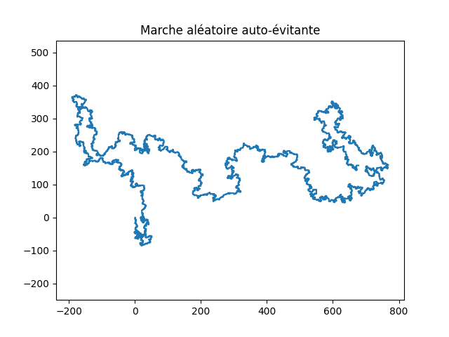

Code source SAW
Script python disponisble sur Github, génération de la marche sous forme de d'arbre SAWTree, reconstruction de la trajectoire et visualisation avec Matplotlib.
Code sourceMarche aleatoire auto-evitante (Self-Avoiding Walk).
Cette page présente mon implémentation Python de l'algorithme du pivot pour générer une marche aléatoire auto-évitante basé sur une structure de données d'arbre.
L'implémentation suit le pseudo-code réalisé par N. Clisby dans l'article Efficient implementation of the pivot algorithm for self-avoiding walks.
Script python disponisble sur Github, génération de la marche sous forme de d'arbre SAWTree, reconstruction de la trajectoire et visualisation avec Matplotlib.
Code source